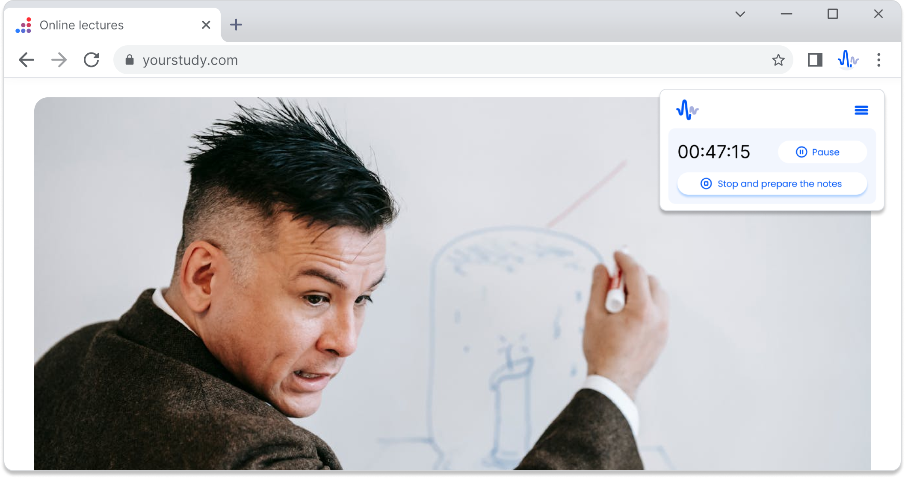
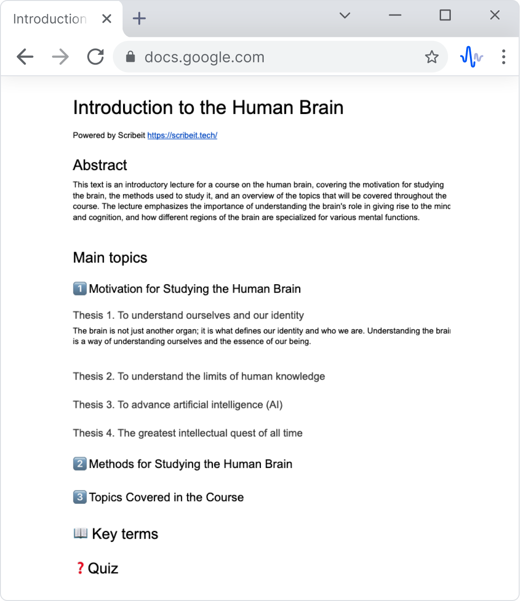
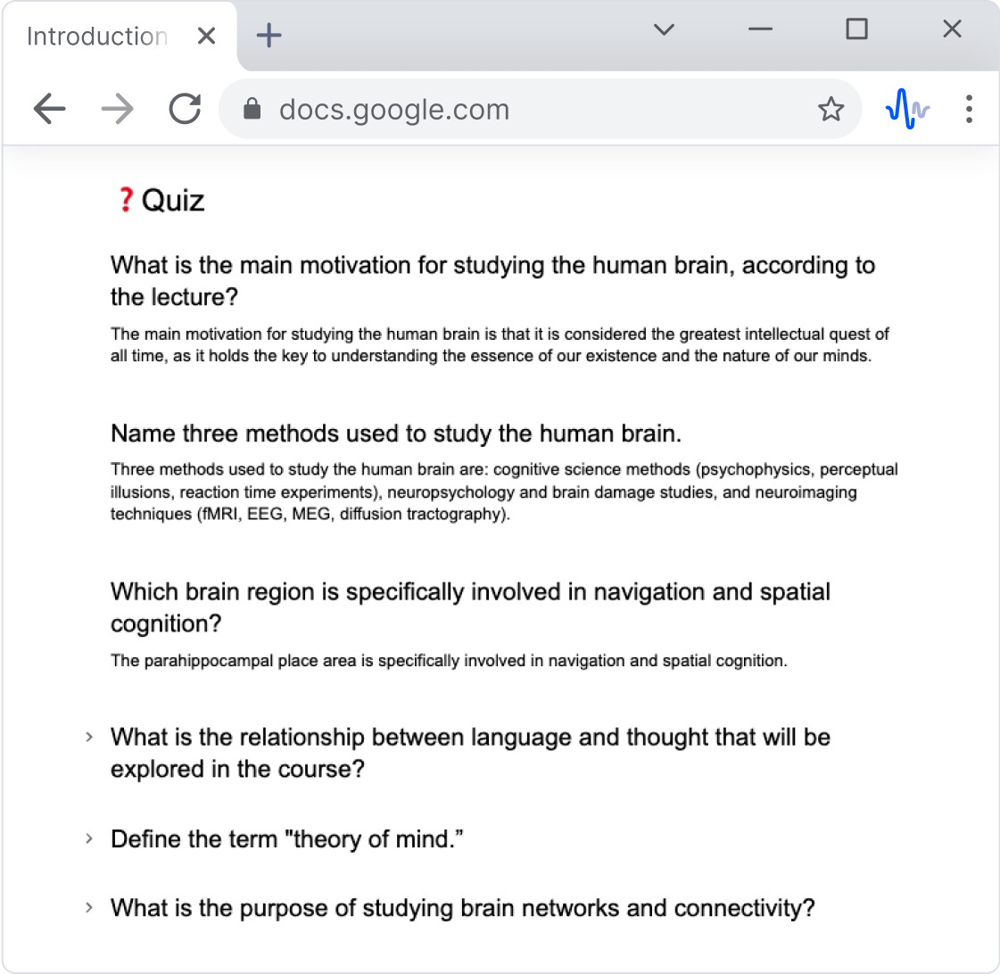
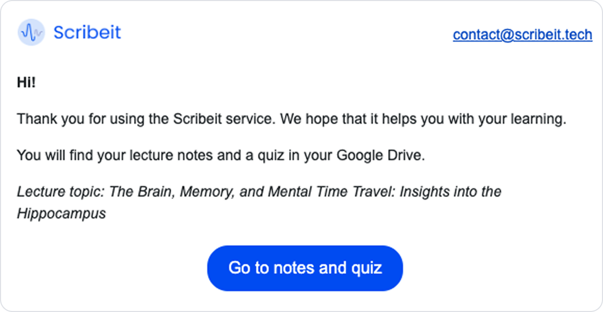

EdTech / 0->1 / AI
Scribeit
Онлайн-лекция превращается в учебный материал
Как co-founder вёл discovery, позиционирование, MVP, рост и автоматизацию контентного производства для международного EdTech-продукта.

Контекст
Учащимся нужен был понятный способ работать с длинными лекциями, не пересматривая материал и не конспектируя его вручную.
Что сделал
Провёл 70+ интервью в трёх сегментах, собрал международный MVP и провёл три итерации позиционирования. Спроектировал автоматизированный поток: URL лекции -> структурированные заметки -> опубликованная страница каталога.
50+ ранних пользователей; средняя позиция в поиске 25 -> 5; CTR 1,3% -> 3,1%; положительное заключение Business Finland по бизнес-плану и 2 соглашения о сотрудничестве с партнёрами.
Выбранные экраны
Путь от лекции к готовому материалу



